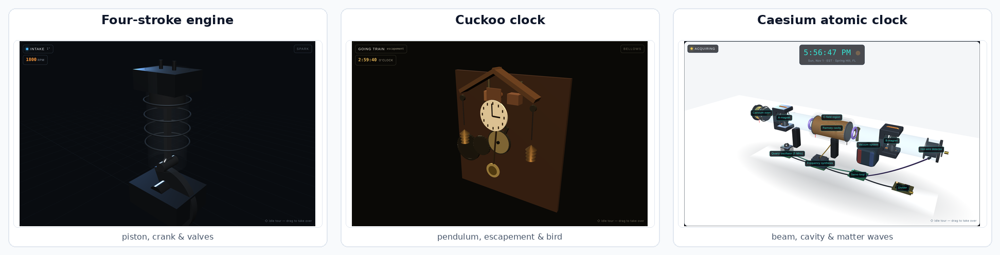
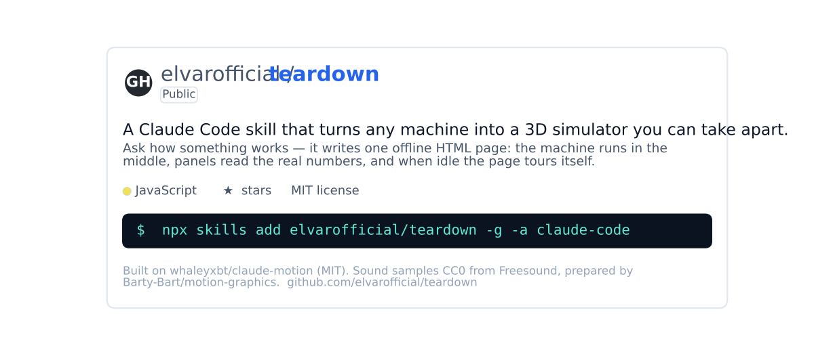
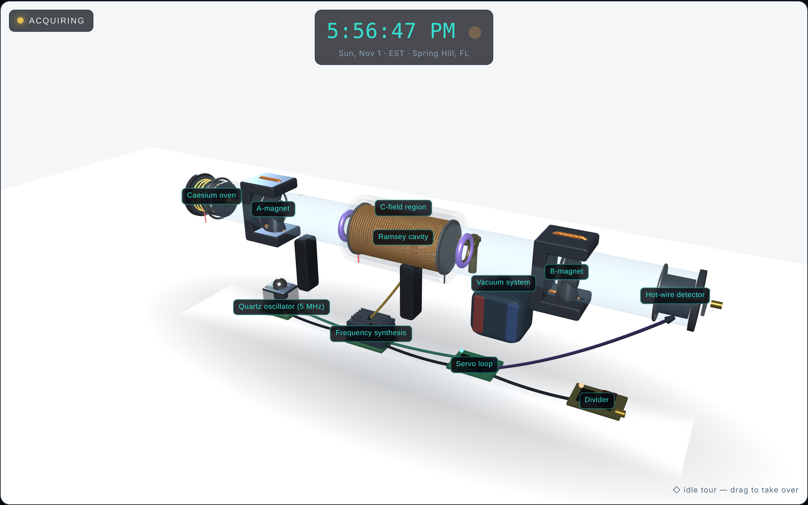
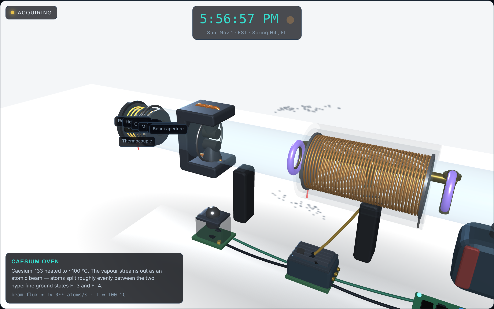
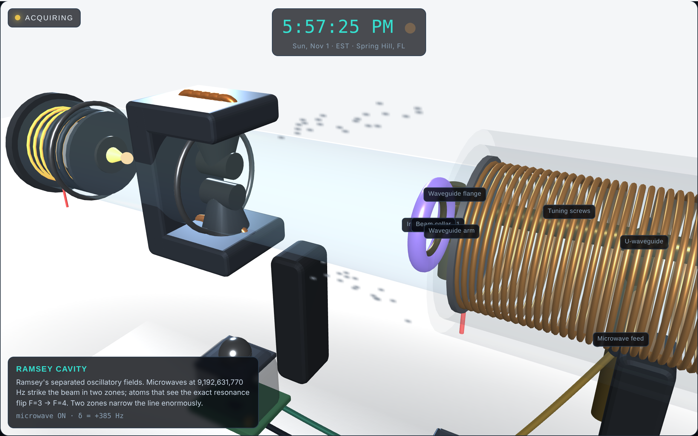
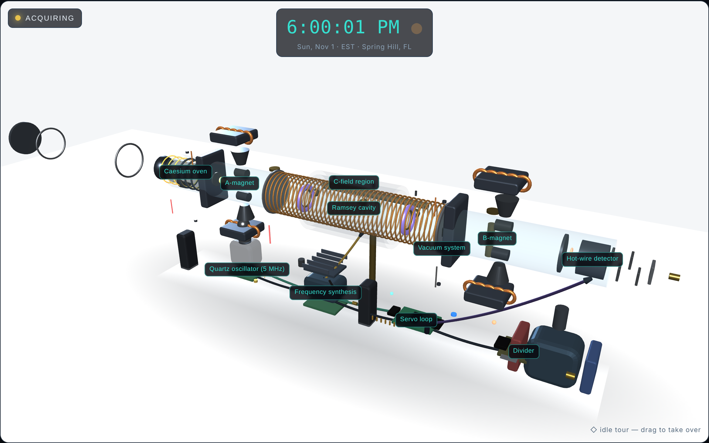
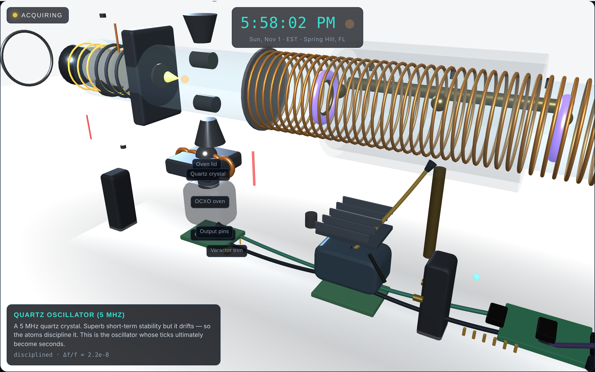
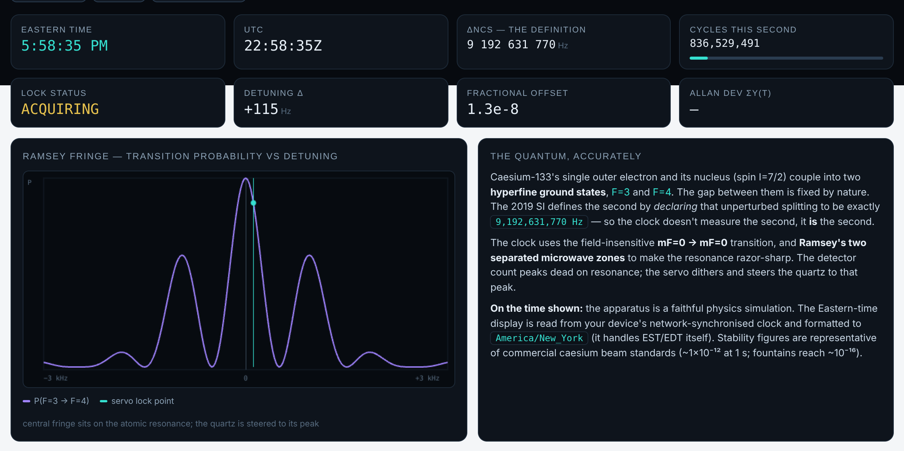
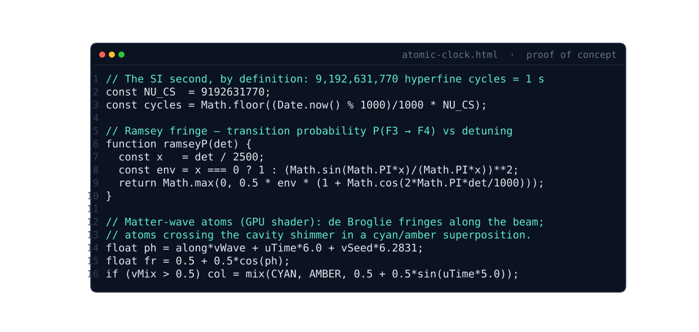

Savvy Security LLC · Proof of Concept
We Took an Atomic Clock Apart in Your Browser
For elvarofficial, who wrote the open-source teardown skill and gave it away. Every screenshot in this article is the real build their tool made possible — running, labelled, and pulled apart.
There is a kind of open-source software that doesn't deserve a review so much as a demonstration. teardown is one of those. It is a skill for Claude Code, published on GitHub by a developer who goes by elvarofficial, and the pitch is both simple and a little audacious: ask how a machine works, and it writes a single offline web page where that machine runs in 3D and you can take it apart.[1]
I don't write code by hand — I turn vague ideas into exact instructions — so I pointed that skill, and a long conversation with Claude, at three machines in a row, hardest last: a four-stroke engine, a mechanical cuckoo clock, and a caesium atomic clock, the instrument that defines the second. This is the result, with real captures of the running builds. It is also, because this is a security firm's blog, honest about exactly what is real and what is modelled.

The software that takes machines apart
teardown is not an app you launch. It is a skill — a packaged set of instructions you install into Claude Code once, after which you can ask in plain English for a simulator and get a finished, offline HTML file back.[1] Each page is built on three.js, the MIT-licensed 3D library that lets someone who isn't a graphics programmer stand up a 3D scene in an afternoon.[4] The skill itself is built on claude-motion by whaleyxbt, and it credits that lineage in its own README.[1][2]
Install is one command, npx skills add elvarofficial/teardown -g -a claude-code, then a one-time npm install; it wants Node.js 20 or newer.[1] The repository ships three worked examples — a V8 engine, a Cessna landing gear and a Strandbeest — so you can see the format before you build your own.

Three builds, hardest last
The engine came first because it is the format's flagship: a single-cylinder four-stroke you can take apart. The slider-crank geometry is exact — the piston position is computed straight from the crank angle — and the panels read genuine derived values: the stroke, cylinder pressure from an adiabatic model, valve lift, and a live pressure–volume indicator loop. It proved the format could carry real numbers, not just a spinning model.
The cuckoo clock is really two engines in one case: a weight-driven going train that keeps time off a swinging pendulum, and a strike train that works the bellows and shoves the bird out the door on the hour. The pendulum is the only timekeeper — everything else counts its beats — so lengthening it visibly makes the clock lose time, exactly as T = 2π√(L/g) says it should. Then we aimed at the hardest target in horology.
The atomic clock, taken apart
The 2019 SI defines the second by fixing the caesium frequency: the unperturbed ground-state hyperfine transition of caesium-133 is, by declaration, exactly 9,192,631,770 hertz.[5] A caesium clock doesn't measure the second so much as realise it. The build lays the whole apparatus out as a vacuum beam tube on a bench, and you can click any stage to fly into it.

Click the oven and the camera flies in. Its shell turns semi-transparent and its parts get their own labels: the boron-nitride crucible, the shimmering caesium charge, the heater coil, the collimator, the beam aperture. The panel at the corner carries the real description and numbers for whatever you've selected.

The heart of it is the Ramsey cavity. Caesium-133's outer electron and its nucleus couple into two hyperfine ground states, F=3 and F=4; the clock works the field-insensitive transition between them, and it uses Ramsey's method of separated oscillatory fields — two microwave zones with a drift in between — to make the resonance razor-sharp, the technique that won Norman Ramsey a share of the 1989 Nobel Prize.[6] In the build, the atoms are drawn as matter-wave packets, and an atom crossing the cavity shimmers between cyan and amber — a picture of a quantum superposition before it is measured.

An exploded view slides every labelled part out from its sub-assembly at once, which is the fastest way to see how much is actually in there — the magnet yokes separating from their pole shoes and field coils, the oven from its crucible, the detector from its dynode stack.

Underneath the beam tube runs the part most people forget is even in a clock: the electronics. A quartz oscillator is the thing that actually ticks; it is stable in the short term but drifts, so the atoms discipline it. The detector count peaks dead on resonance, and a servo dithers the microwave and steers the quartz onto that peak. When it is centred, the quartz is locked to caesium, and a divider cuts the 9,192,631,770 Hz down to one pulse per second.[7]

The numbers are real
None of this is a cartoon bolted onto a 3D model. The panels beneath the scene read values derived from the simulated physics: the live Eastern time and UTC, the defining frequency, a counter racing through the 9,192,631,770 cycles that make up the current second, the lock status, the detuning, the fractional offset, and an Allan-deviation figure. Beside them, the Ramsey fringe is plotted live, with a marker showing where the servo is sitting on the central fringe.

An honest note on what this is. This is a faithful simulation and visualisation of how a caesium clock works, not a literal CAD model and not a real atomic reference. The quantum physics is modelled from the real quantities — the hyperfine states, the 9,192,631,770 Hz definition, the Ramsey interrogation, the servo lock. The time it displays is read from your device's network-synchronised clock and formatted to Eastern Time (America/New_York, so it handles the EST/EDT switch itself); no web page can contain an actual caesium oscillator. The stability figures are representative of commercial caesium beam standards (around 10−12); laboratory fountains do far better. The screenshots above are real captures of the running build. We say what it is.
Proof of concept: the code
The whole clock is one self-contained HTML page. It pulls three.js from a single pinned CDN build and otherwise carries all of its own logic, which is the point of the format: one file, offline, nothing to install. The physics on screen is derived, not decorative — here are three pieces of it, straight from the source.

ramseyP() is the fringe the servo locks to; the shader gives each atom speed-dependent fringes and the cavity superposition. The full source of all three builds is in this post's code/ folder.Credit where it is due
None of this would exist without the people who gave their work away. elvarofficial wrote and open-sourced the teardown skill that makes "take this machine apart in 3D" a one-line request.[1] It stands on whaleyxbt's claude-motion runtime, and its sound work traces to CC0 samples from Freesound prepared in Barty-Bart's motion-graphics project.[2][3] The 3D is three.js, MIT-licensed, by mrdoob and hundreds of contributors.[4] Our part was the prompting, the physics checks and the finish work. The foundation was theirs, freely offered, and that deserves to be named.
Why a security firm cares about a 3D clock
Because the pattern underneath it is the one we work in every day. One person with a clear idea, open-source foundations and an AI assistant can now ship real, inspectable software — and "inspectable" is the whole game. The output is a single HTML file you can read end to end. Its one outside dependency is a pinned, versioned library from a CDN — exactly the kind of supply-chain detail a defender should pin or self-host rather than trust by default. The honest move, every time, is to publish the source, state plainly what is modelled versus real, and let people verify it. That is what we did here, and it is what we would tell any client shipping an AI-built product to do.
Take it apart yourself
The best way to understand this is to open it and start clicking. All three builds run entirely in your browser — no install, no account. Then go install the skill and build your own machine.
Run the builds. Each opens in your browser; drag to orbit, click a part to fly in.
Launch the atomic clock The cuckoo clock The engine The teardown skill on GitHubSources
All links accessed November 1, 2026. Figures 3 to 8 are real screenshots of the running atomic-clock build; Figure 1 and Figure 7 are likewise real captures; Figure 9 is from the clock's own source, included in this post's code/ folder. The build is rendered for the article with a pinned three.js.
- elvarofficial. teardown — a Claude Code skill that turns any machine into a 3D simulator you can take apart. README, source and examples; MIT licence. github.com/elvarofficial/teardown
- whaleyxbt. claude-motion (MIT) — the runtime, frame capture and review rules teardown is built on. github.com/whaleyxbt/claude-motion
- Barty-Bart. motion-graphics — the CC0 Freesound samples, prepared for reuse, credited by teardown. github.com/Barty-Bart/motion-graphics
- mrdoob et al. three.js, the MIT-licensed JavaScript 3D library. github.com/mrdoob/three.js
- BIPM. The definition of the second (SI), fixing ΔνCs = 9,192,631,770 Hz for the caesium-133 ground-state hyperfine transition. en.wikipedia.org/wiki/Second
- Norman F. Ramsey — the method of separated oscillatory fields (Ramsey interferometry), 1989 Nobel Prize in Physics. en.wikipedia.org/wiki/Ramsey_interferometry
- Overview of the caesium beam / fountain standard and how the oscillator is disciplined to the atomic resonance. en.wikipedia.org/wiki/Atomic_clock
- Anthropic. "Claude Code overview." code.claude.com/docs/en/overview